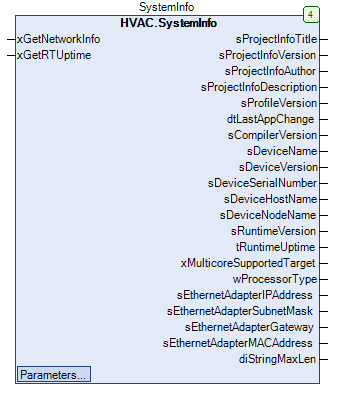
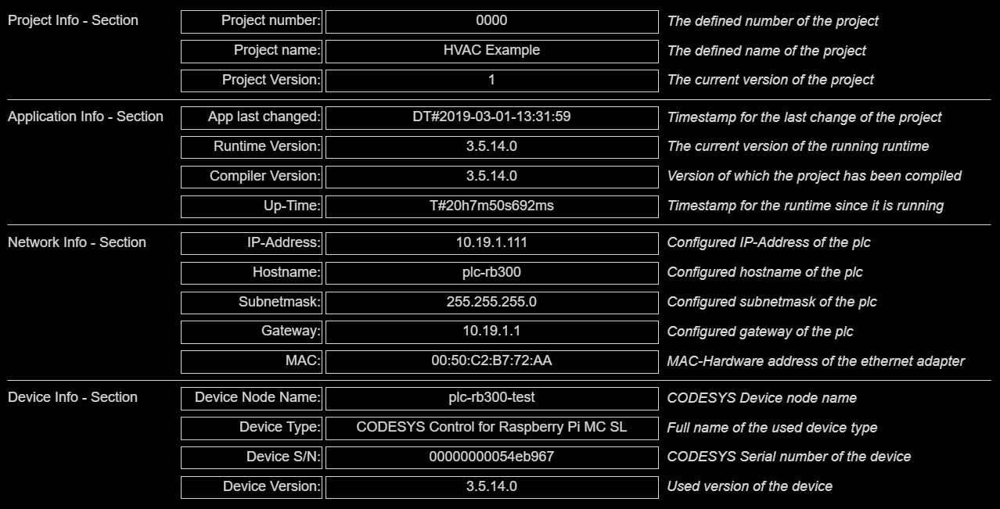

SystemInfo (FB)¶
FUNCTION_BLOCK SystemInfo
Kurzbeschreibung¶
Erfassung von Systeminformationen / Eingabe von individuellen Projektinformationen.
Darstellung¶

Funktionsbeschreibung¶
Dieser Funktionsbaustein ermöglicht es, die Systeminformationen auszulesen.
Hierbei werden die statischen Werte, welche beim Download einer Applikation auf die Steuerung geschrieben werden, angezeigt.
Außerdem werden auch Werte angezeigt, welche sich zur Laufzeit der Runtime ändern können.
Diese Werte können innerhalb eines definierbaren Intervalls abgefragt werden sowie bei Bedarf auch ausgelesen werden.
Eingang xGetNetworkInfo¶
Bei jeder ansteigendenden Flanke ( FALSE > TRUE ) werden die aktuellen Netzwerkinformationen des Sytems ausgelesen.
Die Rückgabe der Werte erfolgt über die Ausgänge sEthernetAdapterIPAddress, sEthernetAdapterSubnetMask, sEthernetAdapterGateway und sEthernetAdapterMACAddress.
Eingang xGetRTUpTime¶
Bei jeder ansteigendenden Flanke wird die aktuelle Laufzeit des Systems ausgelesen.
Die Rückgabe des Werts erfolgt über den Ausgang tRuntimeUptime.
Sollwerte / Parameter¶
Name Datentyp Wertebereich Initialwert Funktion sProjectNumber STRING 0000 Individuelle Projektnummer zur Anzeige in der Visualisierung sProjectName STRING(255) HVAC Example Individueller Projektname zur Anzeige in der Visualisierung sProjectVersion STRING 1 Individuelle Projektversion zur Anzeige in der Visualisierung sConfigEthernetAdapterName STRING eth0 Name des Netzwerkadapters für die abzufragenden Netzwerkinformationen tRefreshIntervall TIME T#15S Aktualisierungsintervall für die Abfrage der Netzwerkinformationen und der Laufzeit des Systems ( T#0s => Deaktiviert)
Visualisierung¶
Passendes Visualisierungselement aus der HVACV Visu Library: SystemInfo
Darstellung¶

Codesys¶
- InOut:
Scope Name Type Initial Comment Input xGetNetworkInfo BOOL Abfrage der aktuellen Netzwerkinformationen des Systems ( FALSE > TRUE ) xGetRTUptime BOOL Abfrage der aktuellen Laufzeit des Systems ( FALSE > TRUE ) sProjectNumber STRING ‘0000’ Individuelle Projektnummer zur Anzeige in der Visualisierung sProjectName STRING(255) ‘HVAC Example’ Individueller Projektname zur Anzeige in der Visualisierung sProjectVersion STRING ‘1’ Individuelle Projektversion zur Anzeige in der Visualisierung sConfigEthernetAdapterName STRING ‘eth0’ Name des Netzwerkadapters für die abzufragenden Netzwerkinformationen tRefreshIntervall TIME TIME#15s0ms Aktualisierungsintervall für die Abfrage der Netzwerkinformationen und der Laufzeit des Systems ( T#0s => Deaktiviert) Output sProjectInfoTitle STRING(diMaxStrLen) Titel- Feld der integriertenProjektinformationsProjectInfoVersion STRING(diMaxStrLen) Version- Feld der integriertenProjektinformationsProjectInfoAuthor STRING(diMaxStrLen) Author- Feld der integriertenProjektinformationsProjectInfoDescription STRING(255) Beschreibung- Feld der integriertenProjektinformationsProfileVersion STRING(diMaxStrLen) Profil-Version, die beim Download gesetzt wurde dtLastAppChange DT Zeitstempel der letzten Änderung an der Applikation sCompilerVersion STRING(diMaxStrLen) Compiler-Version, die beim Download gesetzt wurde sDeviceName STRING(diMaxStrLen) Device-Name sDeviceVersion STRING(diMaxStrLen) Device-Version sDeviceSerialNumber STRING(diMaxStrLen) Device-Seriennummer sDeviceHostName STRING(diMaxStrLen) Device-Hostname sDeviceNodeName STRING(diMaxStrLen) Device-Nodename sRuntimeVersion STRING(diMaxStrLen) Runtime-Version tRuntimeUptime TIME Runtime-Laufzeit der CODESYS Control Runtime ( nicht der Applikation ) wProcessorType WORD Runtime-Prozessortyp sEthernetAdapterIPAddress STRING(diMaxStrLen) IP-Adresse des angegebenen Netzwerkadapters sEthernetAdapterSubnetMask STRING(diMaxStrLen) Subnetzmaske des angegebenen Netzwerkadapters sEthernetAdapterGateway STRING(diMaxStrLen) Gateway-Adresse des angegebenen Netzwerkadapters sEthernetAdapterMACAddress STRING(diMaxStrLen) MAC-Adresse des angegebenen Netzwerkadapters diStringMaxLen DINT Maximale Länge der Strings